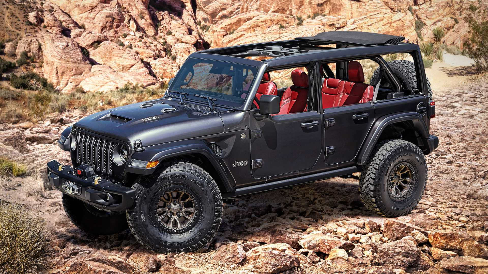
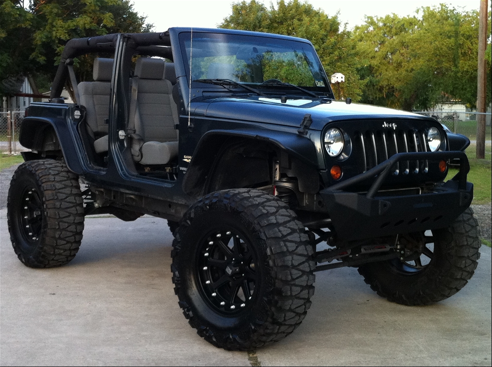

About Jeep Wranglers
While owning a Jeep Wrangler myself I have learned a lot about Jeeps. There are many things people do not know about them if they have never owned one themsleves. Jeep Wranglers come in a 2-door or 4-door option and there are also different packages to choose from. The first Jeep Wranger was made in 1941 and was used in the military. The model CJ is sometimes claimed as being the original military model. Since then there has been many more models created. Jeep Wranglers have fender flares and a flat front windsheild making it able to drive without doors. Jeep Wrangers are also avaliable in a hard top or a soft top. Both of these tops allowing for easy access for removal. Another great thing about Wranglers is that they have a built in roll bar for offraoding and a safer ride. Although these cars are known for their offroad capabilities they are now made safer and a lot more comfortable for daily driving.
 